Welcome!
Hello, World!
Seja bem-vindo(a) a documentação da Nina "ʕ ∗ •́ ڡ •̀ ∗ ʔ
Essa documentação é para explicar todas as funções da Nina para os membros do nosso Discord ╰( ◕ ᗜ ◕ )╯
ATENÇÃO!
Nina é um bot exclusiva para os membros do meu Discord e da minha live.
Caso queira fazer parte do nosso Discord ou da nossa Live clique nos hyperlinks.
Notas de Atualizações
Aqui será postado todas as notas de atualizações que eu fizermos na nina.
[+] - Adicionado | [-] Removido | [Fix] - Corrigido
01/09/2022
[+] Adicionado o comando !comandos para visualizar a lista de comandos com prefix.
[+] Adicionado Sobre mim ao clicar na nina no Discord.
[-] Os mini-games foram desativados.
[Fix] A embed de divulgação agora mostra o número exatado de quantos viewers estão na live, em vez de mostrar anniesemtrema está offline.
[Fix] Agora o sistema de nivelamente não vai mostrar que o membro upo 2x para o nível 1.
[Fix] Agora a mensagem que aparece no chat ʕ·ᴥ·ʔ┊comandos vai mostrar o seu nível correto, em vez de mostrar um nível anterior.
L EXEMPLO: nica subiu para o nível 2. Porém o nível que era para aparecer era nica subiu para o nível 3.
10/09/2022
[+] Adicionado um sistema para quando um novo moderador entrar na equipe.
[+] Adicionado um sistema que toda vez que nina entrar em um servidor, ela vai quitar.
O motivo é para eu deixar a nina pública pra testar as novas funções do discord.
12/09/2022
[+] Adicionado um mini-game de aposta.
19/09/2022
[+] Adicionado o mini-game Adivinhe o personagem.
30/09/2022
Nota de Atualizações foi movido para o sistema de fórum do Discord.
Bem-vindo
Ao entrar no servidor o membro automaticamente recebe o cargo ✦ ❝ ઇ Convidados⸝⸝ ۰ ⸼ ✦.
Auto Role
Ao entrar no servidor a Nina enviarar uma mensagem no canal ʅ-ʕ•ᴥ•ʔ-ʃ┊logs juntamente com uma Embed.
Nessa Embed é possível que membro que entrou no servidor Acenar para os membros antigos, clicando no botão Acene para dizer olá
A mensagem vai aparecer no canal ʕ-•ᴥ•ʔ┊bate-papo
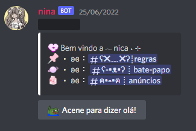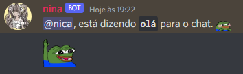
TTS
Para os usuários que tem problemas auditivos temos um sistema de TTS próprio.
Esse recurso foi programado para ajudar as pessoas portadores de deficiência auditiva, visando melhorar a comunicação.
Para usar o comando !tts é necessário ter o cargo ✦ ❝ ઇ TTS ⸝⸝ ۰ ⸼
depois que você tiver o cargo vá até a sala ＾▿＾┊tts é digite: !tts [mensagem]
Você vai ter a opção de mandar o áudito em Português ou Inglês.
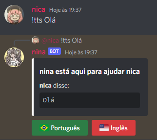
Mural da Vergonha
Você viu algum membro do nosso Discord fazendo algo vergonho?
Reaja com 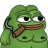 (peepoChomky), caso tenha 3 reações a nina vai puxar as informações da mensagem e vai mandar no canal •‿•-mural-•‿•
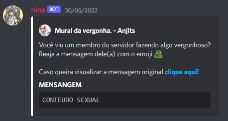
Sorteio
Participe dos Sorteio e tenha a chance de ganhar recompensas, talvez até alguns NP Event
Para participar dos Sorteios é necessário que você pegue o cargo Eternal Return que fica na sala ˏˋ♥̩̥̩-⑅sorteio⑅-♥̩̩ˊˎ.
Depois que você pega o cargo, automaticamente você já está participando dos Sorteios do servidor.
Caso você vá na sala ˏˋ♥̩̥̩-⑅sorteio⑅-♥̩̩ˊˎ você consegue ver quantas pessoas estão participando.
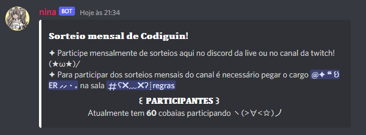
Mensagem que aparece quando alguém ganha algum Sorteio no servidor.
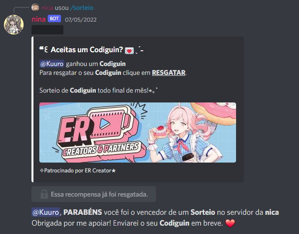
Reação
Sistema de Reação para recomendação de Anime.
Quer recomendar um Anime divertido para assistimos em Live?
Vá até o canal ヾ☆▽☆-anime.
Assim que você adicionar as informações do Anime, a nina vai reagir sua mensagem, os animes mais votados a gente vai assistir em Live.
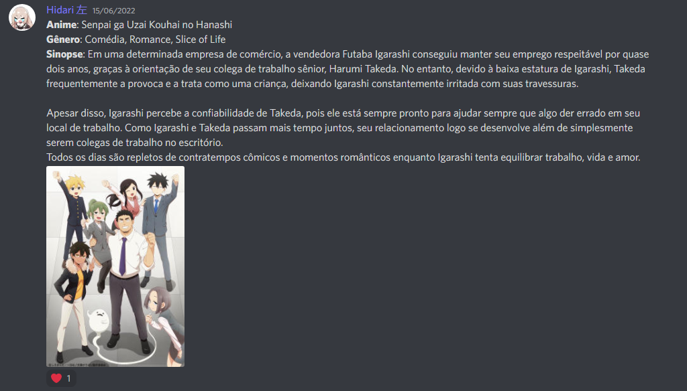
Sala de Voz
Crie uma sala de Voz personalidade com até 4 Slot para jogar Cobalt Protocol com os seus amigos.
Para criar uma sala personalidade é necessário que você entre no canal de voz chamado
✦ ❝ ઇ CP - Sala ⸝⸝ ۰ ⸼
Assim que você entrar, a sua sala personalidade será criada e você já pode chamar os seus amigos para jogar aquele Cobalt Protocol em call.
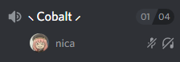
Uma mensagem também será enviada para o seu privado, confirmado que a sala foi criada com sucesso.
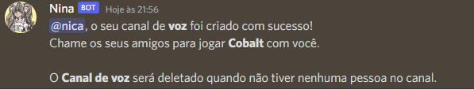
Twitch (Divulgação)
A cada 5 minutos a nina checka na API da Twitch se estou online ou offline, caso eu esteja online
será enviada uma EMBED no canal ᵔᴥᵔ┊lives e será notificado os membros que tiverem o cargo ✦ ❝ ઇ Notificações da Live⸝⸝ ۰ ⸼.
Caso queira saber quando eu estiver online vá até a sala ʕ✖﹏✖ʔ┊regras e pegue o cargo
✦ ❝ ઇ Notificações da Live⸝⸝ ۰ ⸼
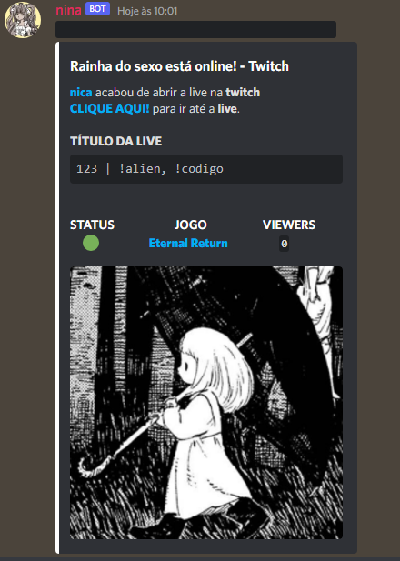
Cargos por botão
Vá a até a sala ʕ✖﹏✖ʔ┊regras e seleciona um dos cargos para ficar por dentro das notícias do Eternal Return ou para ficar pode dentro das Notificações da Live.

Economia
O sistema de Economia do servidor atualmente é baseado em 5 moedas.
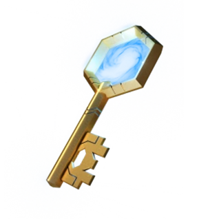 Chaves - As chaves você pode obter subindo de nível ou acertando as respostas do mini-game Quiz.
Com as Chaves você pode abrir Baú misterioso e ganhar recompensas.
Estrelas - As estrelas você consegue obter subindo de nível, pegando recompensa diária, acertando as respostas do mini-game Quiz e muito mais.
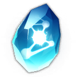 NP - O NP é uma moeda do sistema de Cartas/Waifu, você consegue NP pegando cartas de outros usuários, em vez de você pega a carta, você recebe o NP como bonificação por ter aparecido uma carta que já é de outro usuário.
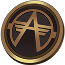 A-coin - Cada carta possui uma quantidade de A-coin e esses A-coin você consegue pegando das cartas. Cada tier de carta possui uma quantidade de A-coin diferente.
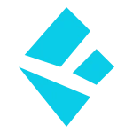 EA - Essência Azul é a moeda da nossa live chamada de Channel Points (Pontos do canal). Você recebe EA com tempo online no chat. Com os EA você pode comprar alguns itens.
Url Fix
Quando algum membro enviar uma URL do Twitter ou do Tiktok em baixo da EMBED vai aparecer um Band-aid e quando o autor da mensagem clicar no Band-aid o bot vai excluir a mensagem do autor e vai adicionar o vx na URL.
Caso a pessoa não queira colocar o vx na mensagem o Band-aid irá desaparecer depois de 1 minuto.
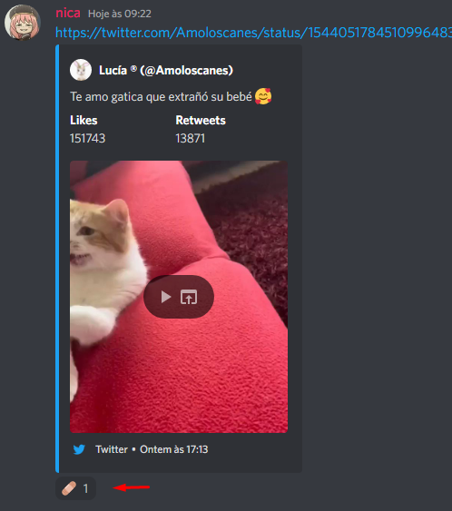
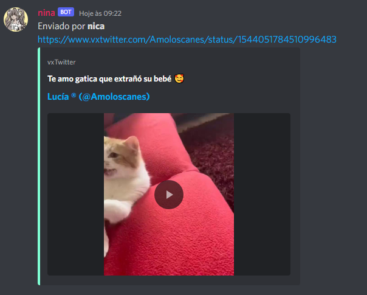
Vantanges (Boost)
Os membros que forem SUBS tem vantagens nos Mini-games, Sistema de Nívelamento e Economia todas as recompensas serão dobradas até que o SUB acabe.
Você pode verificar se você possui SUBS olhando seu perfil no comando /perfil
COM SUB
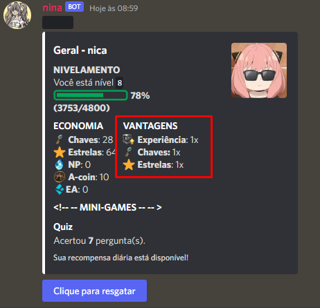
SEM SUB
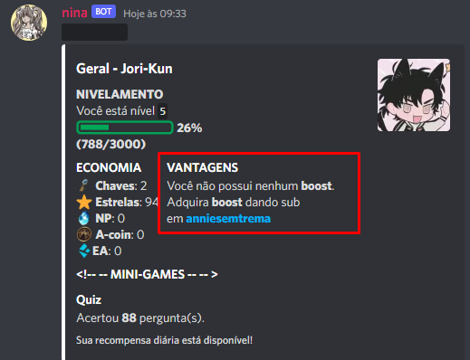
Nivelamento
Nível máximo do servidor atualmente é 100
Todos os usuário começam no nível 1
Caso um membro esteja BOOSTADO ele vai receber experiência em dobro, caso o usuário upe de nível ele vai receber Estrelas e Chaves em dobro.
Formula de experiência: nível atual * 600
O usuário recebe 15~25 de experiência por minuto.
Quando algum usuário upar de nível a nina vai avisar o usuário no canal ʕ·ᴥ·ʔ┊comandos
Os usuários podem ver sua barra de experiência, experiência atual, experiência que falta e porcentagem do level atual. Para verificar bata usar o comando /perfil
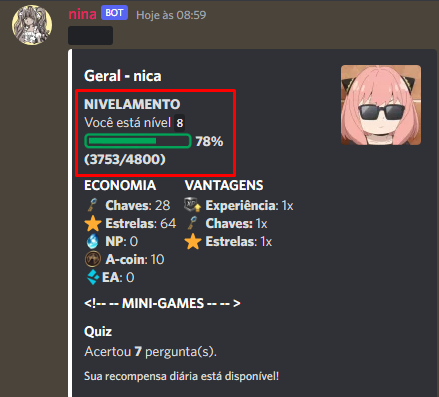
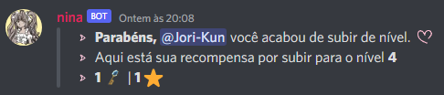
Multi-chat
Os membros do nosso Discord agora podem visualizar e conversar com o chat da nossa Twitch sem precisar entrar na live.
Vá até a sala ଘ੭ˊ꒳ˋ੭✧┊twitch e mande uma mensagem, essa mensagem será enviada para o chat da Twitch através da nina.
Nesse mesmo chat você pode visualizar as mensagens do pessoal da nossa Twitch.
Enviado - Mensagem que foi enviada do Discord para Twitch.
Recebido - Mensagem que foi enviada da Twitch para o Discord.
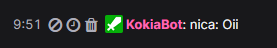
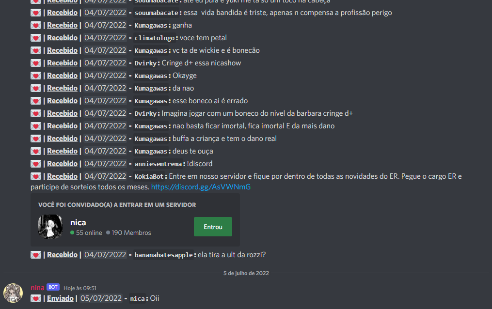
Comando personalizados.
Agora os membros do servidor tem permissão para criar comandos personalizados.
Cada comando custa 20 Estrelas. Apenas será descontado na criação do comando.
Para editar ou deletar o comando será totalmente de graça.
Os comandos da comunidade não vão usar a mesma prefix da nina que no caso são ! ou /.
Os comandos da comunidade vão ser uma prefix própria que vai ser +
Cada membro pode criar apenas 1 comando e membros BOOSTADOS vão poder criar 2 comandos.
COMANDOS
Para criar um comando você vai usar: !command add [nome] [descrição]
Para editar um comando você vai usar: !command edit [nome] [descrição]
Para deletar um comando você vai usar: !command delete [nome]
Use +comandos para ver a lista dos comandos da comunidade.
Server Boost
Impulsione o servidor é receba recompensas por ajudar o servidor a crescer ╰། ◉ ◯ ◉ །╯
Membros sem BOOST vão receber 2 Chaves 2 Estrelas e 200 pontos de experiência.
Membros BOOSTADOS vão receber 3 Chaves 3 Estrelas e 300 pontos de experiência.
Ambos os tipo de membros vão receber uma mensagem fofinha no canal ･-｡ﾟ☆━੧༼-•́-ヮ-•̀-༽୨ em forma de agradecimento por ajudar o nosso servidorzinho.
Aniversariante
Adicione sua data de aniversário para todo mundo do servidor comemorar essa data histórica.
Os membros que estiverem fazendo aniversário vão aparecer no canal ୧ʕ•̀ᴥ•́ʔ୨┊aniversário
Os aniversariantes vão receber 15 Estrelas, 5 Chaves, 1000 Pontos de Experiência e o cargo 🎈🍰🥳🍰🎈 durante 24 horas.
A nina vai divulgar a lista dos aniversariantes sempre meia noite.
Configure sua data de aniversário agora!
COMANDOS
!aniversario set xx/xx/xxxx
Exemplo: !aniversario set 21/01/1999
!aniversario list - Visualizar a lista de aniversáriante.
AVISO
Não é possível alterar sua data de aniversário depois de setada.
Antes de enviar o comando verifique se sua data de aniversário está certa.
Banimento
Agora se algum usuário fizer algum besteira usando os comandos da nina e possível que usuário tome ban dos comandos da nina.
O banimento afetara apenas os comandos que tem relação com o banco de dados da nina.
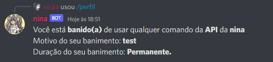
Moderação
Agora quando um novo moderador entrar na equipe a nina irá enviar uma mensagem na DM do novo moderador.
Caso a pessoa tenha a DM bloqueada, a mensagem será enviada no chat da moderação.
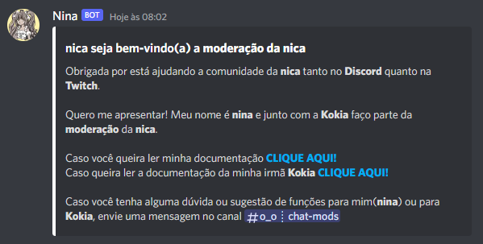
Saida
nina está pública para realizr uns testes em relação as novas funções do discord.
Com isso toda vez que tentarem adicionar a nina em um servidor não selacionado ela será removida automaticamente.
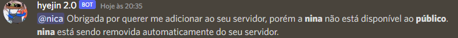
Quiz
As perguntas vão começar aparecer das 10h da manhã (Horário de Brasília) até ás 12:00h da noite (Horário de Brasília)
As perguntas são aleatórias. Caso você responda com a resposta certa você vai ganhar uma quantidade de Chaves e Estrelas. Caso você esteja boostado você vai receber o dobro.
Você pode verificar quantas Estrelas você possui ou quantas perguntas você acertou usando o comando /perfil
Cartas (Waifu)
O sistemas de Cartas (Waifu) do nosso servidor funciona igual o Mudae, porém em nosso servidor as Cartas vão aparecer 20:45 (Horário de Brasília) no chat ʕ-•ᴥ•ʔ┊bate-papo
A primeira pessoa que clicar no botão com o coração vai conquistar a carta.
Caso a carta apareça novamente, em vez de aparecer o botão com o coração, vai aparecer um botão com a quatidade de NP.
As cartas possui status que serão usados para um sistema de batalha no futuro.
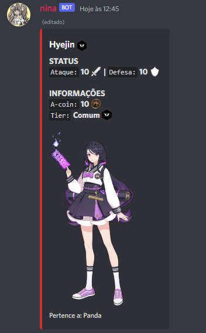
COMANDOS
/colecao - Verificar sua coleção de cartas;
/negociar [usuário] - Negociar suas cartas com outros usuários do nosso servidor;
/db [procurar] [personagem] - Procurar informações de um personagem especifico;
Duelar
Aposte suas Estrelas em um 1v1 de verdade contra seus amigos ou inimigos.
Para chamar um amigo(a) para um duelo é necessário que você e seu amigo(a) tenha pelo menos uma estrela.
Para chama para o duelo basta usar o seguinte comanado:
/duelar [usuário] [quantidade-de-estrelas].
Depois isso seu amigo(a) tem que aceitar o seu pedido de 1v1, depois que aceitar a porradarinha vai começar!
Nesse mini-game apenas a experiência é BOOSTADA.
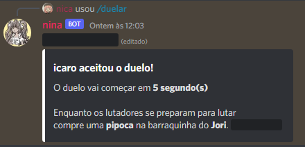
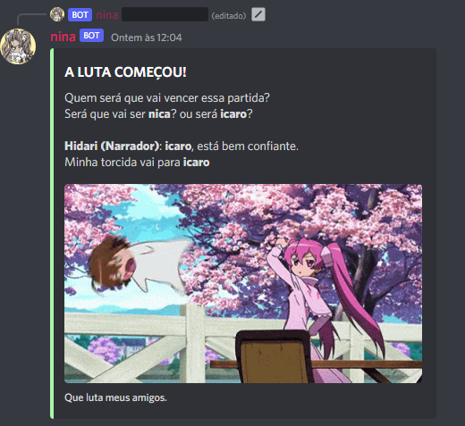
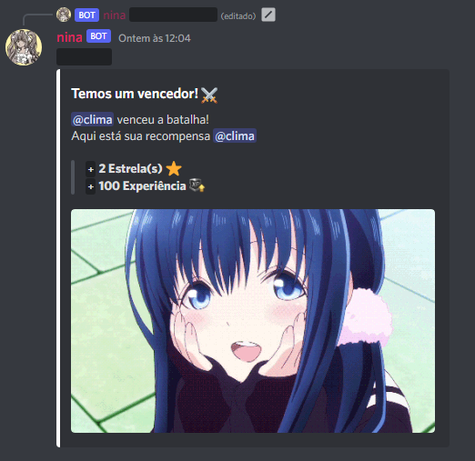
Meiji vs JP
Ajude o JP invadir o painel de controle para vocês conseguirem escapar da Ilha de Lumia.
Horário do Evento
17:30
Sobre o mini-game
As recompensas são baseado na quantidade de jogadores.
As recompensas são Estrelas e Experiência.
A recompensa em Estrelas começa em 5 e a Experiência em 100
Cada jogador aumenta a Estrelas em +1 e a Experiência em +10
A chance de ganhar também vai aumentar conforme a quantidade de jogadores.
a % para vencer começa em 40%
Quando a EMBED aparecer no chat ʕ-•ᴥ•ʔ┊bate-papo os membros do nosso Discord vão ter 5 minutos para entrar no mini-game. Depois disso a sala será fechada e o Mini-game irá começar.
Jogadores BOOSTADO vão receber o dobro de recompensa.
Apostar
Agora quando tiver tendo campeonatos e o time do Brasil estiver participando, a gente vai abrir as apostas no servidor.
Para participar é necessário digitar !apostar [time] [quantidade-de-estrelas].
Sempre que houver uma aposta rolando, vai ser mostrada no chat ʕ-•ᴥ•ʔ┊bate-papo
COMANDOS
Comando para apostar: !apostar [time] [quantidade-de-estrelas]
Comando para ver a tabela atual: !tabela
Adivinhe o personagem
Adivinhe o personagem diariamente é receba recompensas.
Para cada usuário o sistema manda um personagem novo.
Se um usuário acertou o personagem o contador vai mandar um novo personagem novo dentro de 24 horas a partir do momento em que o usuário acertou.
Para participar use o comando /adivinhe
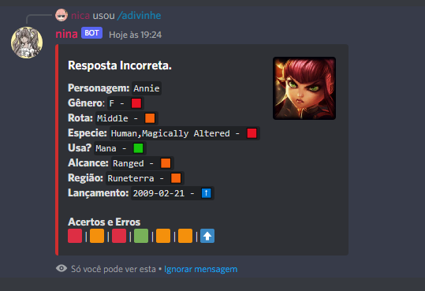
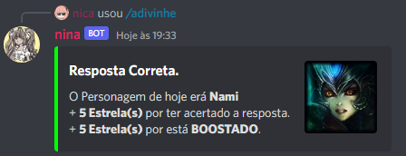